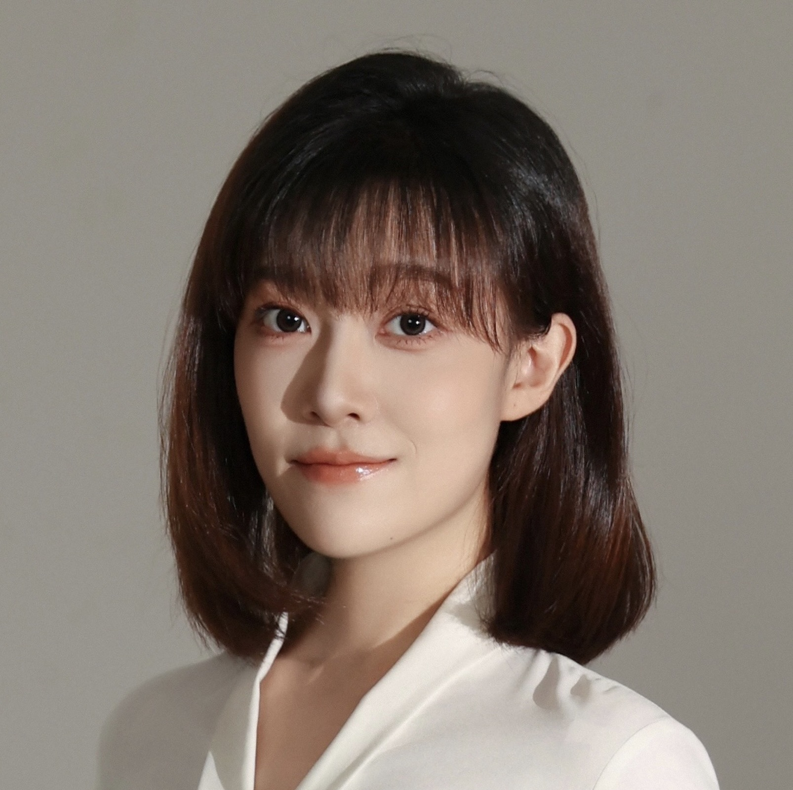

Yufei Zhu
Ph.D. Candidate
Institute of Operations Research and Analytics (IORA)
National University of Singapore (NUS)
Email:
Hi! I am a final-year Ph.D. candidate in the Institute of Operations Research and Analytics at the National University of Singapore, advised by Zhenyu Hu and Joel Goh.
I study how firms should design dynamic operational processes when participants respond strategically: what information to reveal, how to structure incentives, when to introduce competition, and whether to grant agency. Intuitive policies can backfire through the behavior they induce. I examine these questions in operational contexts including labor-platform hiring, innovation sourcing, and human–AI contracting.
More recently, I have been studying healthcare operations, focusing on how to optimize care delivery in hospital-at-home programs, drawing on an ongoing collaboration with practitioners at the National University Health System (NUHS).
I received my B.E. in Industrial Systems Engineering and Management from NUS, with a Minor in Financial Mathematics.
Research Interests
Research Topics: Information and Incentive Design, Search and Matching, Human–AI Operations, Healthcare Operations
Methodologies: Game Theory, Dynamic Programming, Dynamic Contracting
© 2026 by Yufei Zhu
Research
Working Papers
- 1. with Joel Goh.
- 2. with Zhi Chen and Zhenyu Hu.
- 3. with Tian Feng, Yangge Xiao and Ying-Ju Chen.
Work in Progress
-
4.
Sourcing Innovation: Sequential Search under Competition with Leaderboardswith Zhi Chen and Zhenyu Hu.
Conference Presentations
Delegating Innovation: Sequential and Parallel Search under Competition
- 36th Annual POMS Conference, Reno, NV, USA May 2026
- The 16th POMS-HK International Conference, Shenzhen, China Jan 2026
- INFORMS Annual Meeting, Atlanta, GA, USA Oct 2025
- INFORMS International Meeting, Singapore Jul 2025
- The 15th POMS-HK International Conference, Hong Kong, China Jan 2025
- INFORMS Annual Meeting, Seattle, WA, USA Oct 2024
- MSOM Conference, Minneapolis, MN, USA Jul 2024
- POMS Annual Conference, Minneapolis, MN, USA Apr 2024
- Analytics and Operations Young Scholar Workshop, Singapore Mar 2024
- INFORMS Annual Meeting, Phoenix, AZ, USA Oct 2023
The Strategic Secretary Problem
- 36th Annual POMS Conference, Reno, NV, USA May 2026
- The 16th POMS-HK International Conference, Shenzhen, China Jan 2026
- INFORMS International Meeting, Singapore Jul 2025
- The 15th POMS-HK International Conference, Hong Kong, China Jan 2025
- INFORMS Annual Meeting, Seattle, WA, USA Oct 2024
Racing Against Automation: Dynamic Incentives When AI Can Preempt the Human
- 2026 INFORMS Revenue Management and Pricing Section Conference, Ann Arbor, MI, USA Jul 2026
© 2026 by Yufei Zhu
Teaching
Guest Instructor
-
DBA4811 Analytics for Consulting
(BBA), Fall 2025 & Fall 2026
- Designed and delivered lectures on machine learning algorithms, primarily covering non-linear methods.
- Selected comments from students:
- “Very knowledgeable! She also goes around to make sure we are following and incorporates questions within her presentation to encourage participation.”
- “I enjoyed her lesson content! It was very clear and easy to follow, the small anecdotal stories she included (e.g. a little bit of history behind the Manhattan distance) were also interesting.”
- “She’s approachable. Her dynamism and ability to break down difficult concepts.”
- “Clearly communicated the concepts and provided good examples to explain.”
Teaching Assistant
- BMA5017 Managerial Operations and Analytics (MBA), Fall 2023
- DBA4711 Applied Analytics (Undergraduate), Spring 2023
- IE6001 Foundations of Optimization (Ph.D.), Fall 2022
Tutorial Instructor
-
IE2111 ISE Principles & Practice
(Undergraduate Core), Spring 2021
- Conducted 11 tutorial sessions on engineering economics and risk analysis.
© 2026 by Yufei Zhu